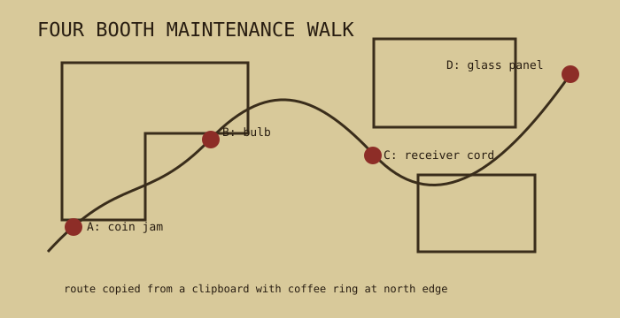

A public phone failed in public ways: dead bulb, bent shelf, chewed receiver cord, coin return packed with gum foil. This route made the small repairs before the complaints arrived.

| stop | check | field note |
|---|---|---|
| A | coin return | clear nickel slot; listen for trapped washer in cup. |
| B | lamp and directory | replace bulb if amber; directory chain should move but not invite theft. |
| C | receiver cord | braid exposed near strain relief. tape is temporary, paperwork is permanent. |
| D | glass panel | hairline crack at shoulder height; safe until cold weather, then not safe. |
Unsigned coin-box openings are treated as shortages, not mysteries.